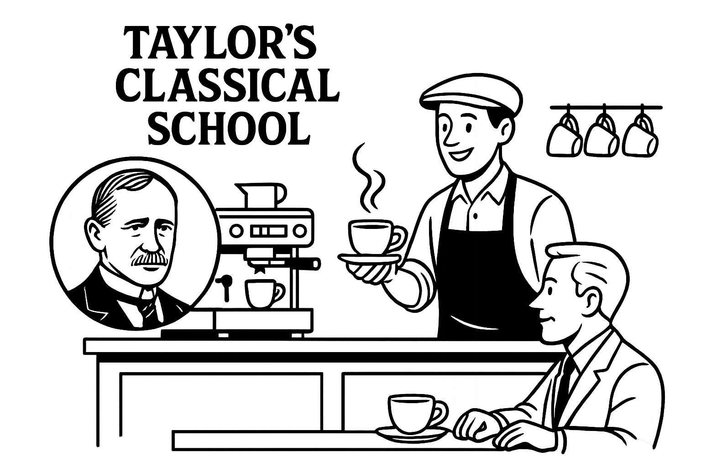
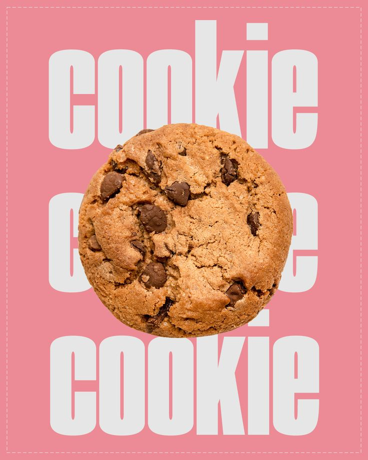
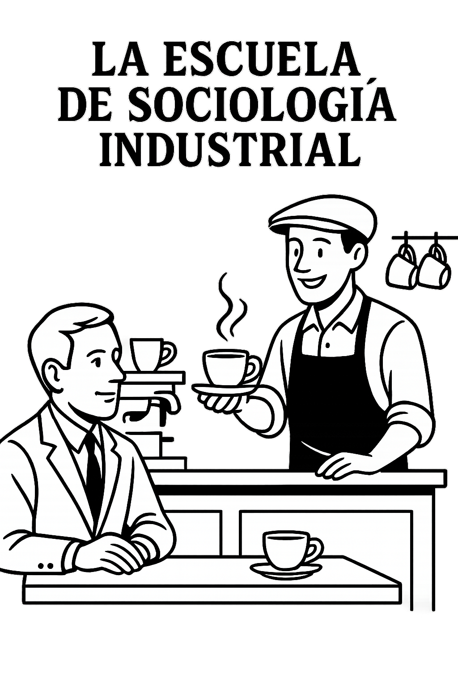
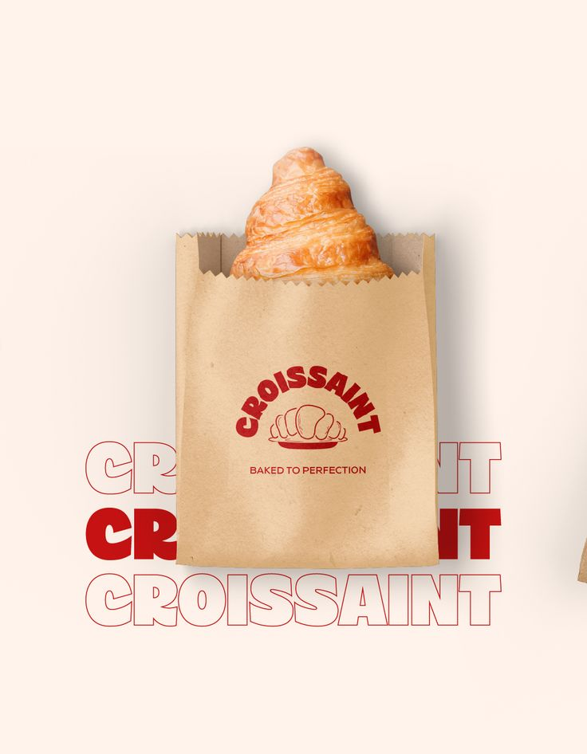
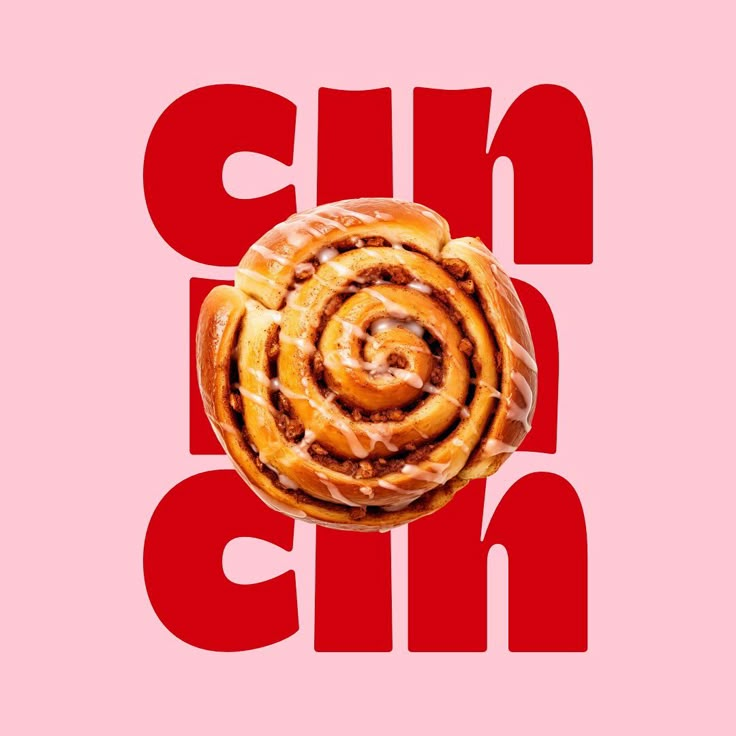

Escuela Clasica

División de tareas: Separamos quién amasa, quién hornea, quién decora, etc.
Estandarización: Usamos recetas y procesos bien definidos para que cada producto salga igual y en menos tiempo.
Planificación: Tenemos un calendario de producción, control de stock e insumos.
Escuela Relaciones Humanas

Grupos informales dentro del trabajo: Somos amigas dentro del ambito laboral
Clima laboral: Al trabajar con alguien más fomentamentamos un ambiente de trabajo agradable y de confianza.
Reconocemos el esfuerzo de quien ayuda, valoramos sus ideas.
Escuela de la Sociologia Industrial

Al trabajar con otros la dinámica del grupo es fundamental: cómo se toman decisiones, cómo se maneja el estrés cuando hay muchos pedidos.
Estilo democrático: al tener socias, permitirmos la participacion en tomar decisiones (como diseño de tortas o precios).
El clima laboral, incluso siendo un negocio pequeño.
Escuela Estructuralista
Aunque no seamos una empresa grande, tenemos procedimientos organizados:
Tenermos un registro de pedidos y entregas
Usarmos hojas de costos para controlar precios
Llevarmos un calendario de producción
Racionalización se ve al usar procesos repetibles: misma decoración para cierta torta para ahorrar tiempo.
Aunque no hay jerarquías formales, definimos roles al trabajar con alguien: produccion, atencion al cliente, control de insumos, redes sociales, etc.
Teoria de las Organizaciones

Al trabajar con otros la dinámica del grupo es fundamental: cómo se toman decisiones, cómo se maneja el estrés cuando hay muchos pedidos.
Estilo democrático: al tener socias, permitirmos la participacion en tomar decisiones (como diseño de tortas o precios).
Cuidamos el clima laboral, incluso siendo un negocio pequeño.
Teoria de los Sistemas

La pastelería no funciona aislada: Clientes, proveedores, redes sociales, tendencias del mercado, todo afectan tu negocio.
Si sube el precio de los huevos o la manteca, afecta la producción haciendo un ajuste del sistema.
Si cambiás el estilo de tortas por pedidos más modernos, me adapto al entorno.
Tener en cuenta lo que dicen los clientes ayuda a mejorar.